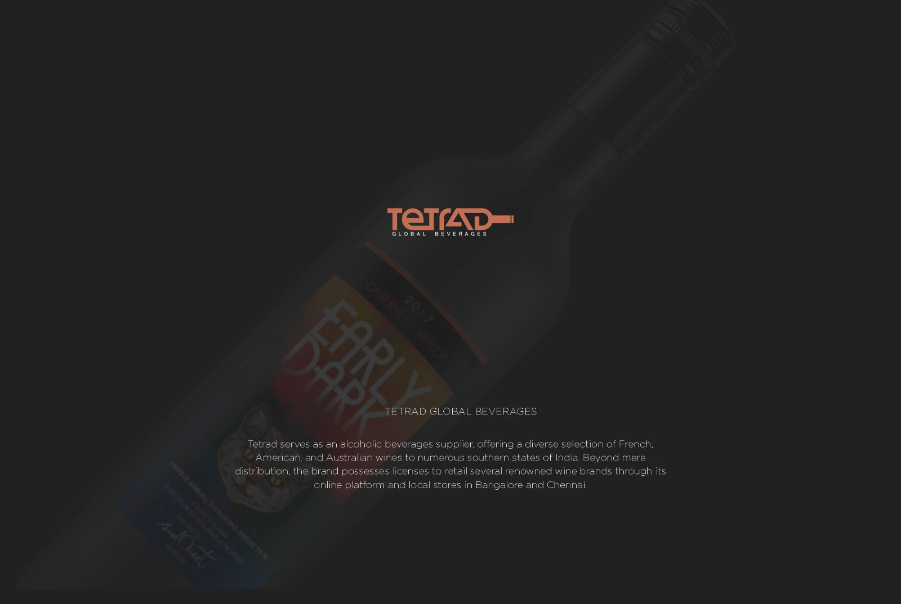
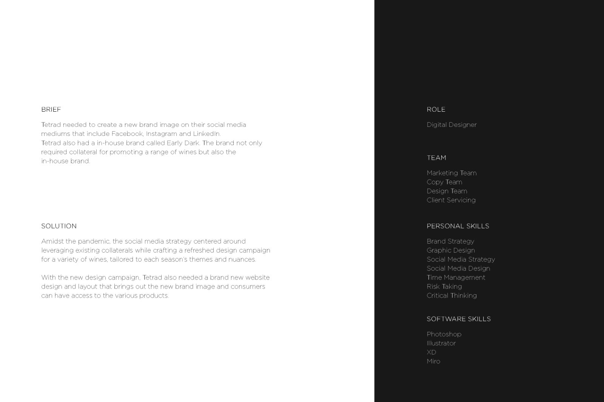
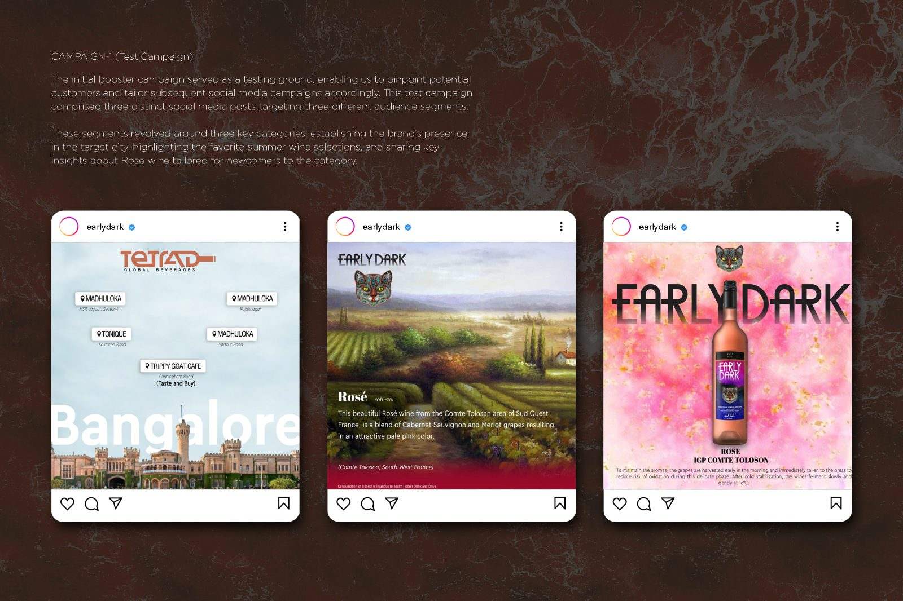
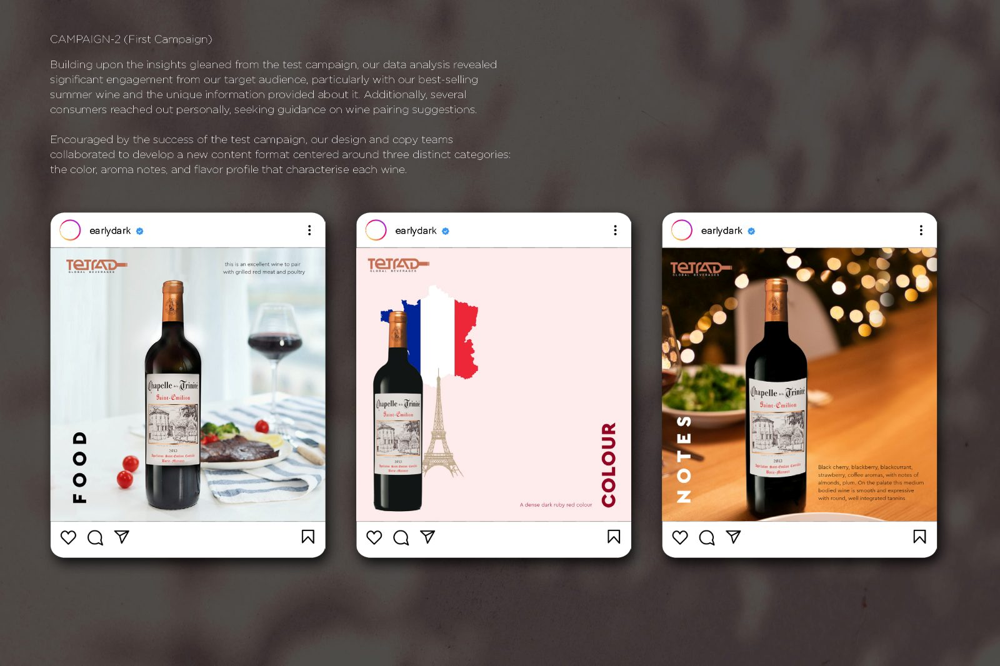
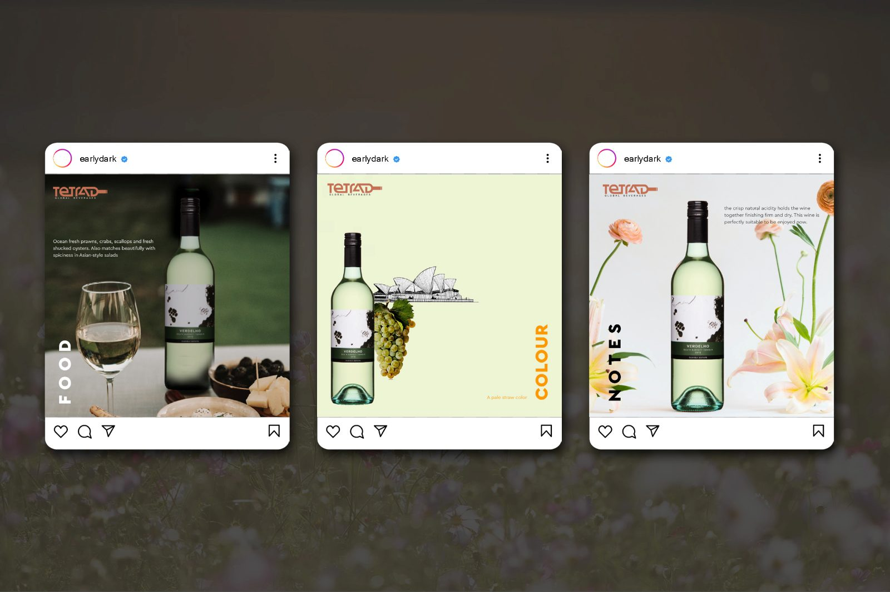
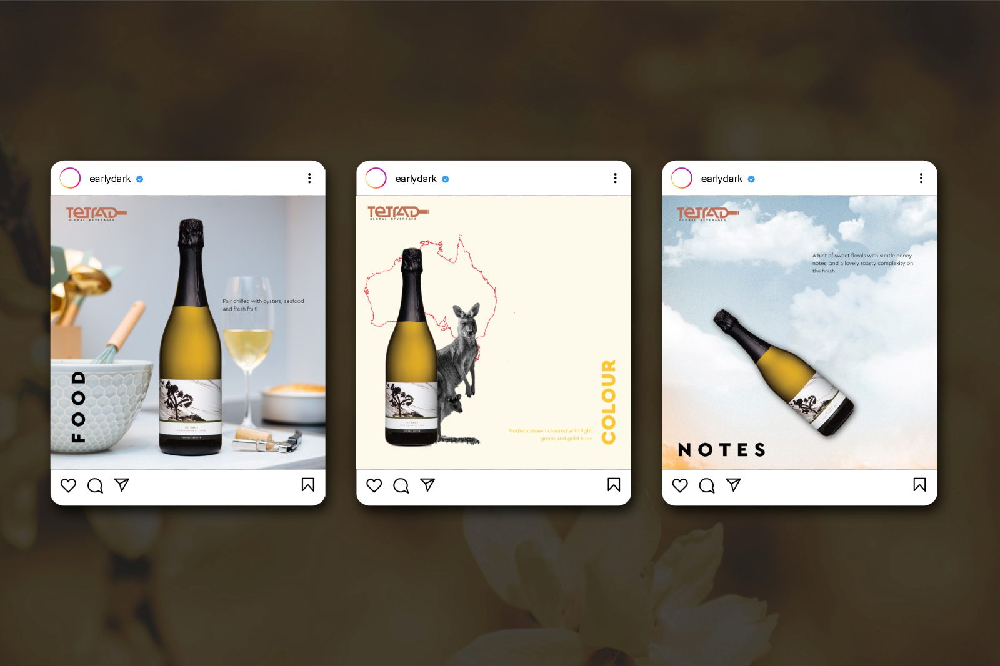
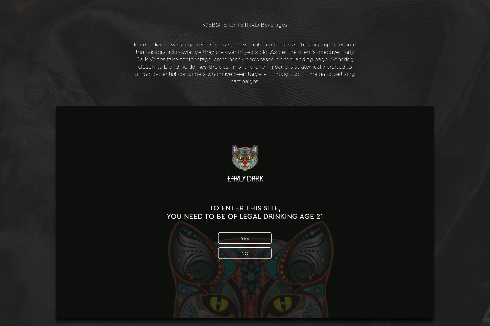
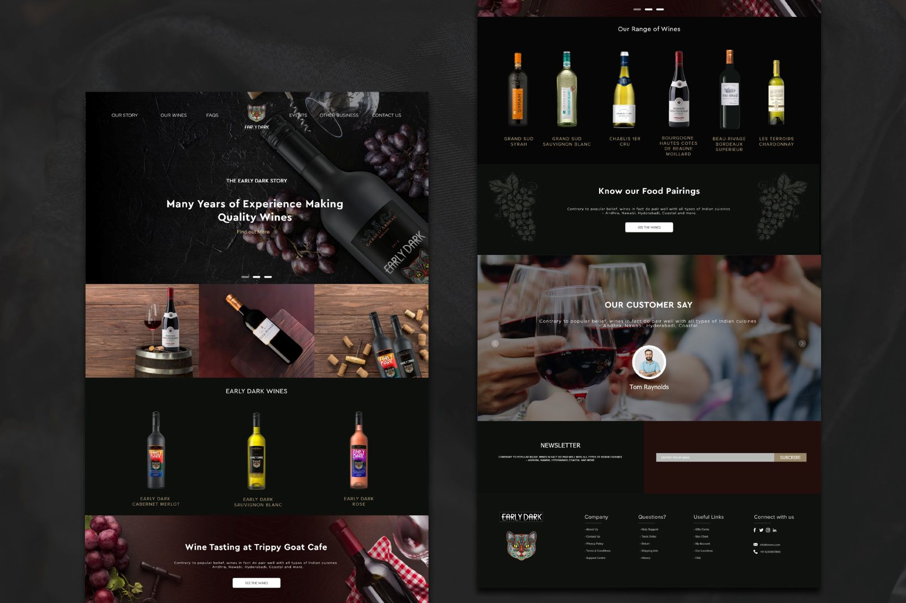

Tetrad
Beverages
Amid the pandemic, a social media strategy built on existing collateral alongside a refreshed design campaign for a range of wines, tailored to each season. Tetrad also needed a new website design and layout carrying the new brand image, giving consumers access to the range.
A wine importer, a lockdown, and no way to sell online.
Tetrad Global Beverages supplies French, American and Australian wines across several southern states of India, and holds licences to retail established wine brands through its own stores in Bangalore and Chennai.
The pandemic closed the rooms where wine is actually sold — tastings, restaurants, walk-ins. I came in as digital designer to build a social strategy and a site that could carry the range when nobody could visit it.
A catalogue of bottles is not a content plan.
Wine marketing normally runs on occasion and atmosphere, both of which had disappeared. What remained was a list of products — and a product list posted repeatedly is the fastest way to train an audience to scroll past you.
Worse, there was no budget for a shoot. Everything had to be built from photography Tetrad already owned, which meant the same images would be seen more than once no matter what I did.
Make the repetition the system.
Rather than hide the limited library, I organised posts into recurring themes so the same bottle could appear in genuinely different registers. Food places the bottle against a pairing, shot flat and warm. Colour abstracts the label into a field of its own colour. Notes carries tasting notes by illustration rather than photography.
Three passes over one catalogue gives you three times the runway from the same assets. The trade is control: a themed grid is less responsive to whatever is happening that week than a free-form feed, and it commits you in advance. With no shoot budget and an indefinite lockdown, predictability was worth more than flexibility.
A campaign that could run indefinitely, and a shop to point it at.
A seasonal strand ran through the twelve days of Christmas, and a location strand tied posts back to Bangalore. The work centres on Early Dark, a Cabernet Merlot, and the themes are demonstrated across White and Sparkling to prove the system generalises.
The site that followed opens on an age gate — you must be 21 to enter — before reaching the range, the tasting notes and the food pairings, so the social campaign finally had somewhere to send people.
Nine pages, front to back.









What shaped the work as much as the brief did.
No new photography. The single largest constraint, and the origin of the themed structure. Every design decision downstream was made to extend an existing library.
Alcohol advertising rules. India restricts the direct advertising of alcohol, which shapes what a wine brand can say and show on a public feed — and is why so much of the work leans on food, colour and abstraction.
Two markets, one feed. Bangalore and Chennai have different retail footprints, served by a single national-facing account.
A system built to be handed over.
The campaign shipped across nine pages, the themes were proven across three wine categories, and the site launched with the age gate, the range, tasting notes and pairings. What I cannot report is engagement or online sales: the accounts and the analytics sat with the client and were not shared back in a citable form.
The claim I will make is about durability — a structure that let a fixed asset library keep producing without repeating itself.
What I would do differently.
I would have asked for read access to the analytics as part of the engagement, not as a favour afterwards. A themed system is exactly the kind of work you can optimise if you can see which theme performs, and I designed it blind.
I would also have built a shot list for the day restrictions lifted. The themes were designed around a shortage; nobody wrote down what to photograph the moment that shortage ended.